Ternera
Tierna y jugosa, ideal para filetes y guisos.
10,95 €/kg
Calidad y sabor de confianza
Tradición, frescura y calidad
La buena carne se reconoce a simple vista y se disfruta en cada bocado. Descubre nuestros productos y prepara platos para chuparse los dedos.

Nuestra especialidad
En Carnicería Paco queremos que disfrutes de productos sabrosos y de una atención cercana. Nuestro objetivo es ayudarte a encontrar la carne ideal para cada comida.
Desde filetes para el día a día hasta cortes especiales para celebraciones, tenemos opciones para diferentes recetas y gustos.
Descubre el catálogoNuestro catálogo
Carne para cada ocasión: para la plancha, el horno, los guisos, las barbacoas y las comidas en familia.
Tierna y jugosa, ideal para filetes y guisos.
10,95 €/kg
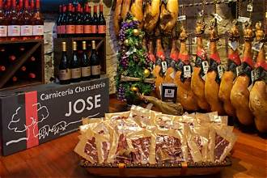
Perfecto para cocinar, asar o preparar a la plancha.
9,95 €/kg

Ideal para barbacoas, guisos y platos tradicionales.
10,50 €/kg

Una opción sabrosa para asados y celebraciones.
12,95 €/kg
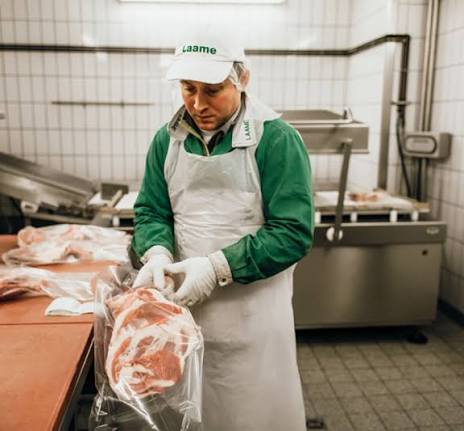
Un corte perfecto para la parrilla y la barbacoa.
9,95 €/kg

Versátil y sabroso para todo tipo de recetas.
4,95 €/kg
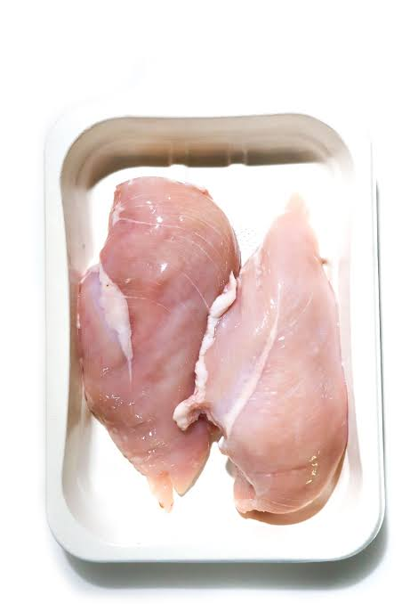
Ideal para la plancha, ensaladas y comidas ligeras.
9,95 €/kg
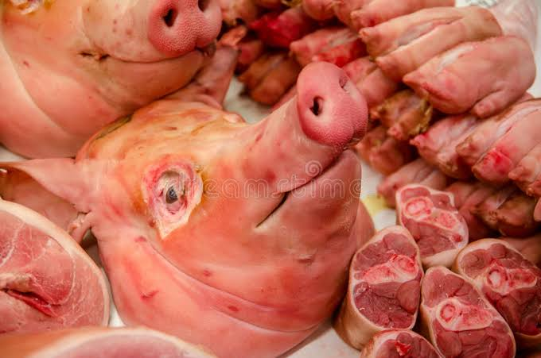
Perfecta para guisos, filetes y recetas caseras.
8,95 €/kg
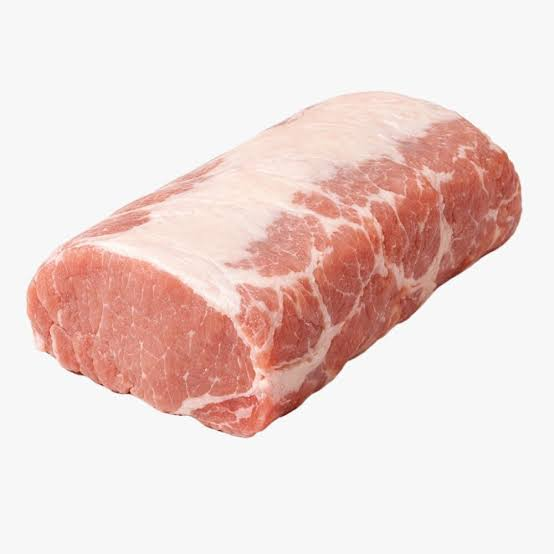
Tierno y delicioso para preparar a la plancha.
9,50 €/kg
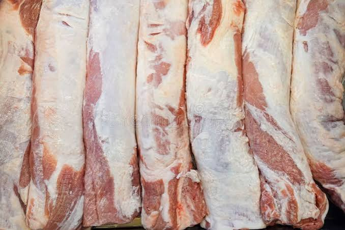
Ideales para el horno, la barbacoa o los guisos.
8,50 €/kg
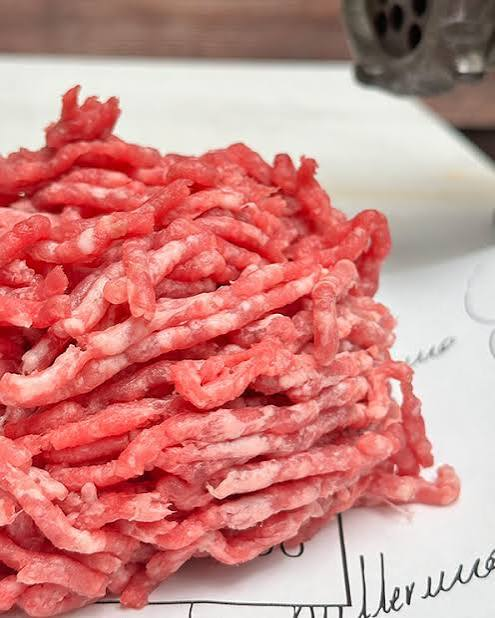
Perfecta para albóndigas, hamburguesas y lasaña.
11,95 €/kg
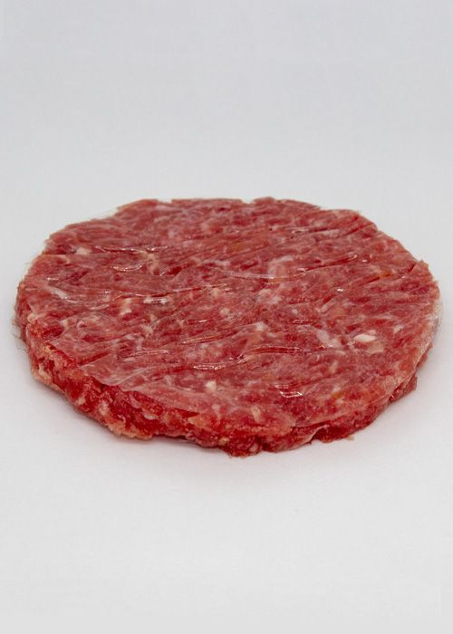
Una solución práctica para una cena deliciosa.
12,50 €/kg
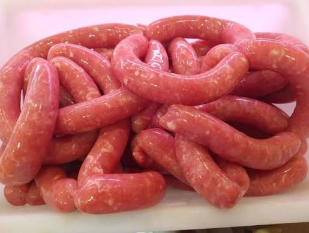
Sabrosas y fáciles de preparar a la plancha.
9,95 €/kg
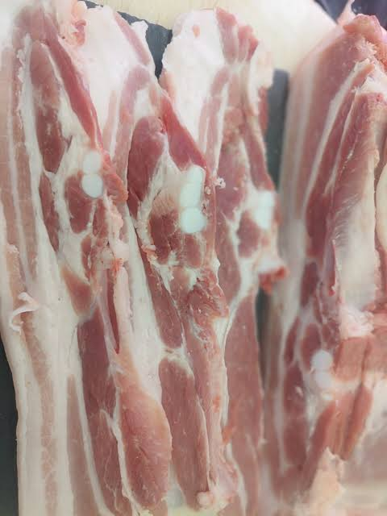
Perfecta para barbacoas y recetas tradicionales.
7,95 €/kg
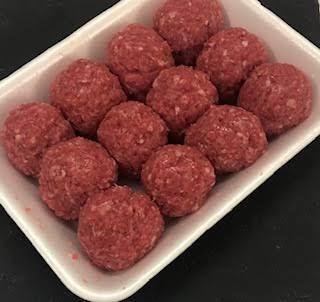
Para cocinar en salsa o acompañar con arroz.
6,50 €/kg
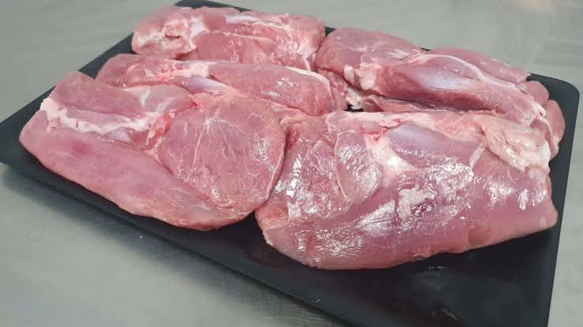
Una alternativa versátil para comidas y cenas.
10,95 €/kg
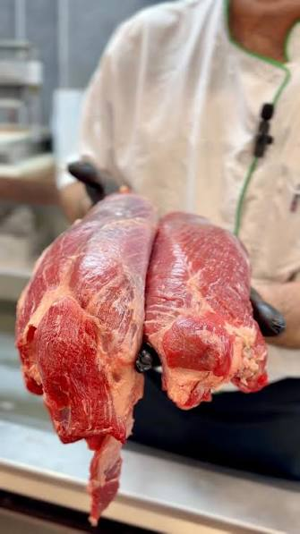
Un producto tradicional para preparar a la plancha.
8,95 €/kg
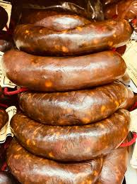
Ideal para parrilladas, guisos y platos de cuchara.
8,50 €/kg
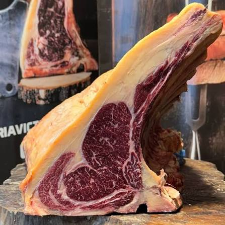
Jugosas y perfectas para la sartén o la parrilla.
9,95 €/kg
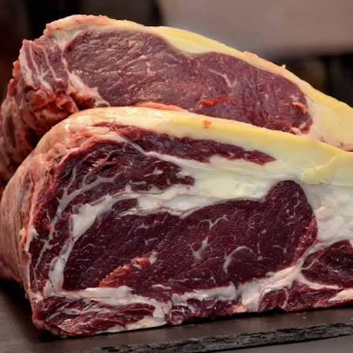
Un corte especial para los amantes de la buena carne.
22,95 €/kg
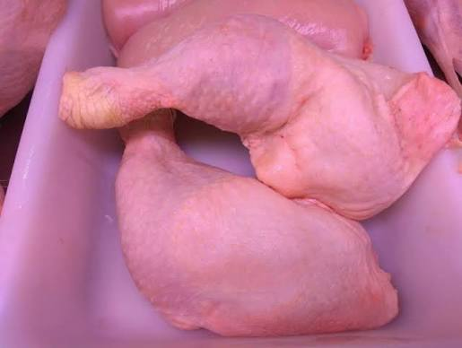
Perfectos para preparar al horno con patatas.
5,50 €/kg
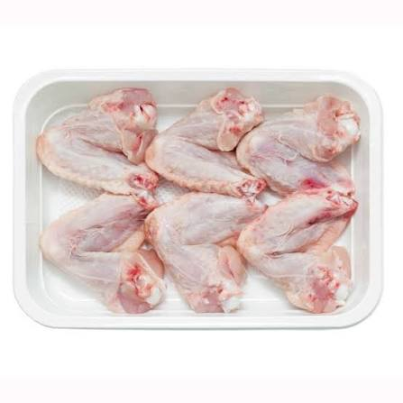
Ideales para hornear, freír o preparar a la barbacoa.
4,95 €/kg
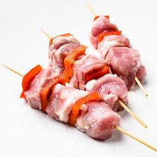
Listos para cocinar y disfrutar de todo su sabor.
12,95 €/kg
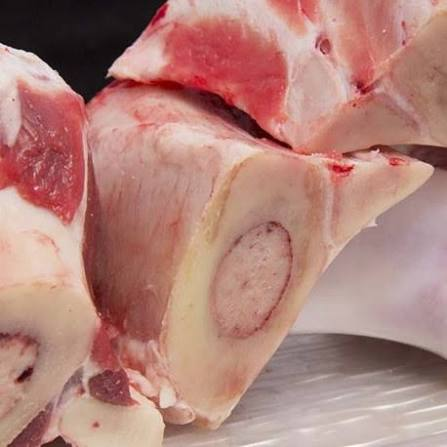
El toque tradicional para caldos y sopas caseras.
3,50 €/kg
Una mirada a nuestro trabajo
Descubre nuestra carnicería y algunos de nuestros productos.

Estamos para ayudarte
¿Buscas un producto concreto o quieres consultar nuestros precios? Escríbenos o ven a visitarnos.
Nombre: Carnicería Paco
Dirección: Calle Bureba, 28, Leganés, Madrid
Teléfono: 916 000 820
Correo: carniceriapaco@gmail.com
Horario: Lunes - Sábado: 9:00H - 16:00H
Quiénes somos
Carnicería Paco nace con la idea de ofrecer una atención cercana y productos para quienes disfrutan de cocinar con buenos ingredientes.
Queremos que cada cliente encuentre lo que necesita y reciba un trato amable, tanto si viene a comprar para el día a día como si prepara una ocasión especial.
En Carnicería Paco, ¡la buena comida empieza aquí!
Ver página de la empresa